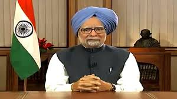

Dr Manmohan Singh

Farmer Prime minister of India. (2004-2009, 2009-2014)
Dr Manmohan Singh, as Finance Minister in 1991, abolished the Licence Raj, source of slow economic growth and corruption in the Indian economy for decades. He liberalised the Indian economy, allowing it to speed up development dramatically.
About the legend
-
India’s fourteenth Prime Minister, Dr. Manmohan Singh is rightly acclaimed as a thinker and a scholar. He is well regarded for his diligence and his academic approach to work, as well as his accessibility and his unassuming demeanour.
-
Prime Minister Manmohan Singh was born on September 26, 1932, in a village in the Punjab province of undivided India. Dr. Singh completed his Matriculation examinations from the Punjab University in 1948. His academic career took him from Punjab to the University of Cambridge, UK, where he earned a First Class Honours degree in Economics in 1957.
-
Dr. Singh’s academic credentials were burnished by the years he spent on the faculty of Punjab University and the prestigious Delhi School of Economics. He had a brief stint at the UNCTAD Secretariat as well, during these years. This presaged a subsequent appointment as Secretary General of the South Commission in Geneva between 1987 and 1990.
-
In 1971, Dr. Singh joined the Government of India as Economic Advisor in the Commerce Ministry. This was soon followed by his appointment as Chief Economic Advisor in the Ministry of Finance in 1972. Among the many Governmental positions
-
In what was to become the turning point in the economic history of independent India, Dr. Singh spent five years between 1991 and 1996 as India’s Finance Minister. His role in ushering in a comprehensive policy of economic reforms is now recognized worldwide.
- Among the many awards and honours conferred upon Dr. Singh in his public career, the most prominent are India’s second highest civilian honour, the Padma Vibhushan (1987); the Jawaharlal Nehru Birth Centenary Award of the Indian Science Congress (1995)
-
the Asia Money Award for Finance Minister of the Year (1993 and 1994); the Euro Money Award for Finance Minister of the Year (1993), the Adam Smith Prize of the University of Cambridge (1956); and the Wright’s Prize for Distinguished Performance at St. John’s College in Cambridge (1955). Dr. Singh has also been honoured by a number of other associations including the Japanese Nihon Keizai Shimbun. Dr. Singh is a recipient of honorary degrees from many universities including the Universities of Cambridge and Oxford.
-
Dr. Singh has represented India at many international conferences and in several international organizations. He has led Indian Delegations to the Commonwealth Heads of Government Meeting in Cyprus (1993) and to the World Conference on Human Rights in Vienna in 1993.
-
In his political career, Dr. Singh has been a Member of India’s Upper House of Parliament (the Rajya Sabha) since 1991, where he was Leader of the Opposition between 1998 and 2004.
-
Dr. Manmohan Singh was sworn in as Prime Minister on 22nd May after the 2004 general elections and took the oath of office for a second term on 22nd May 2009.